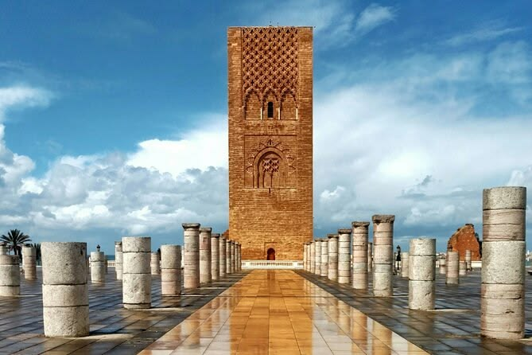
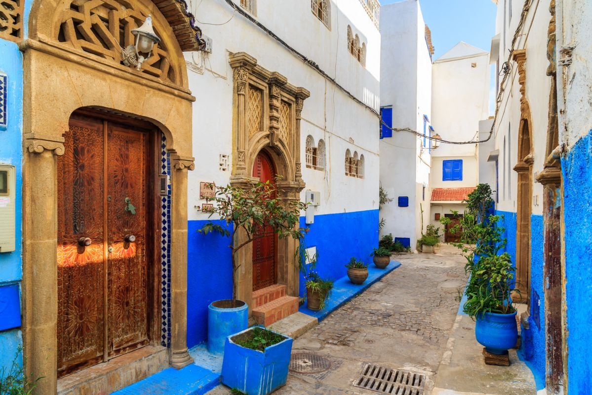
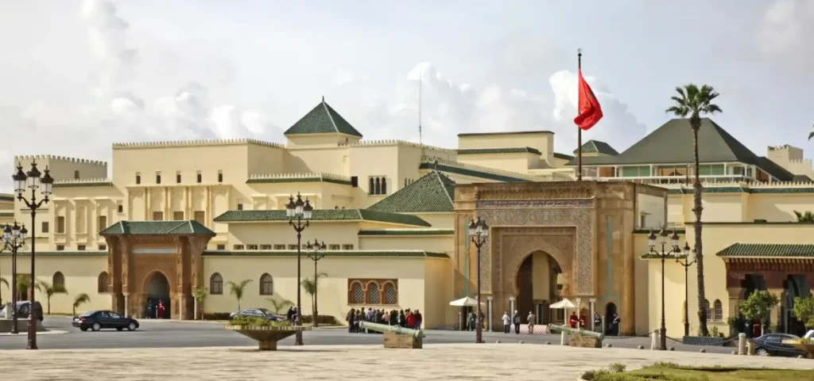

Lieux Incontournables
Explorez les merveilles emblématiques de Rabat.

Tour Hassan & Mausolée Mohammed V
L'emblème de Rabat. La Tour Hassan est le minaret inachevé d'une immense mosquée du XIIe siècle. Juste en face se dresse le Mausolée Mohammed V, chef-d'œuvre de l'artisanat marocain moderne en marbre blanc, abritant les tombes des rois Mohammed V et Hassan II.
Localiser
Kasbah des Oudayas
Ancien camp militaire almohade perché sur une falaise dominant l'océan. C'est aujourd'hui une "ville dans la ville" aux charmantes ruelles peintes en bleu et blanc, célèbre pour son magnifique jardin andalou et le légendaire Café Maure.
Localiser
La Nécropole du Chellah
L'un des sites les plus romantiques du Maroc. Derrière ses hautes murailles se côtoient les ruines de l'antique cité romaine de Sala Colonia et une nécropole mérinide du XIVe siècle, aujourd'hui domaine des cigognes et d'une végétation luxuriante.
Localiser
Palais Royal (Dar al-Makhzen)
Siège du gouvernement et résidence officielle du Roi. Bien que l'intérieur ne se visite pas, l'immense esplanade (le Méchouar) et les portes monumentales richement décorées du palais offrent une promenade imposante au cœur du pouvoir.
Localiser